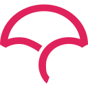

Task Time Sync
Pipeline que consolida tarefas do Jira e horas do Clockify em Excel e Postgres, com alertas de prazo no Microsoft Teams. Execução diária por GitHub Actions.
Desenvolvedor de software · São Paulo, SP
Python · FastAPI · Django · Java
Desenvolvo APIs e integrações entre sistemas em Python e Java, com testes e CI desde o primeiro commit.
Sou desenvolvedor backend e trabalho principalmente com Python (FastAPI, Django) e Java (Spring Boot). Boa parte do que faço é integrar sistemas: consumir APIs REST, normalizar os dados e gravar em Postgres, com testes e CI rodando desde o início.
No Task Time Sync, mantenho um pipeline que roda todos os dias e consolida Jira e Clockify em Excel e Postgres. As etapas são independentes: se o Jira sai do ar, a coleta do Clockify continua e o erro vai para o Sentry.
O Quimia é um projeto em equipe da ExpoTech 2026, com painel administrativo em Java e site institucional. Estou aberto a conversas e oportunidades em diferentes áreas.

Codecov2026
2026
Pipeline que consolida tarefas do Jira e horas do Clockify em Excel e Postgres, com alertas de prazo no Microsoft Teams. Execução diária por GitHub Actions.
CRUD com auditoria, restauração de exclusões, bloqueio após tentativas de login erradas e mais de 160 testes com JUnit 5.
Dashboard estático com login e Row Level Security para acompanhar tarefas e horas por colaborador. Exporta CSV e XLSX.
Site do app que evita misturas perigosas de produtos de limpeza. Layout responsivo de 360 a 1440 px e atributos de acessibilidade.
Documentação bilíngue do pipeline e do dashboard, com arquitetura, modelo de dados e o motivo das decisões de design.